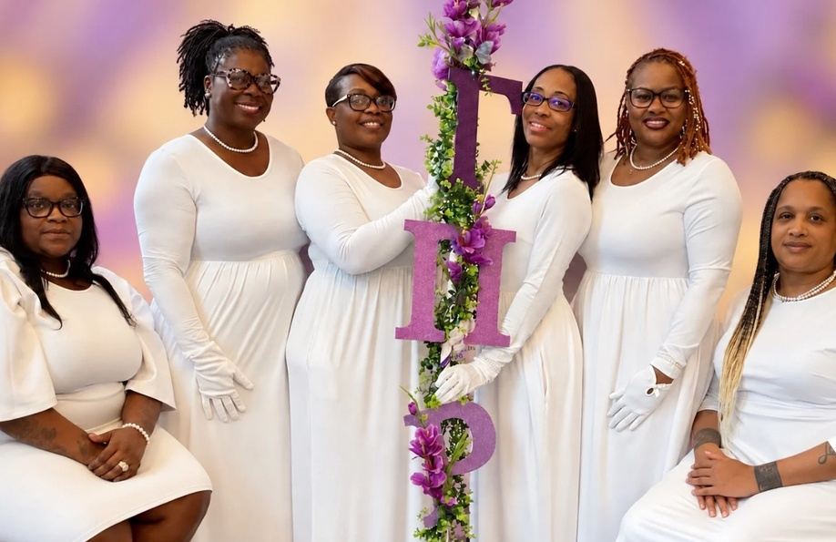

Sisterhood Retreat · Branson, MO
“Founders Day 2026”

Save photoSorors of Gamma Pi Rho Lupus Sorority, Inc. gathered in Branson, Missouri, September 25–28, 2026, for a Founders Day sisterhood retreat celebrating our sixth anniversary and honoring our Founders’ vision.
Through bonding activities and heartfelt conversations, we shared laughter, tears, and encouragement. We inducted our Spring 2026 line, recognized our sorors during an awards ceremony, and took care of Gamma business.
We returned home with cherished memories, stronger bonds, and renewed appreciation for the sisterhood our founders began six years ago.